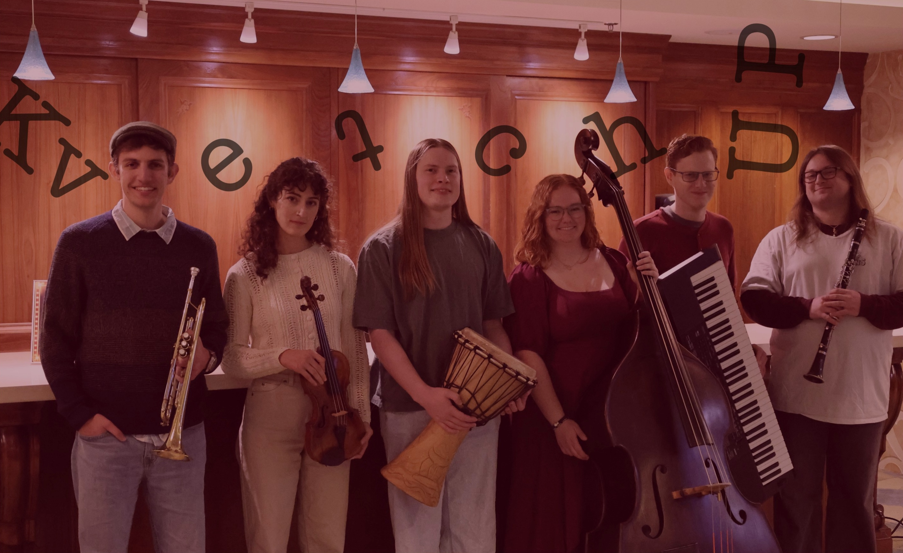

KvetchUP is a 6-piece klezmer band based in Colorado. Moving seamlessly between energetic dance music and soulful melodies, our goal is to engage communities in meaningful and memorable ways. KvetchUP has performed as a featured group with the Lamont Wind Ensemble at the Newman Center for the Performing Arts and at Festo Festo, Denver's monthly klezmer concert. To kvetch is yiddish for to complain... but that's no fun. When they kvetch, it's to UP-lift your spirits!